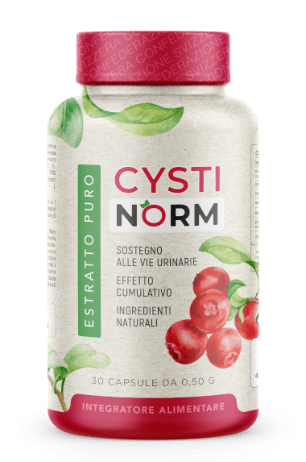
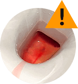
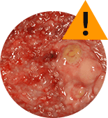
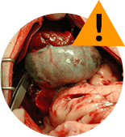

Ho iniziato a notare i sintomi della cistite in me stessa un anno fa. Ho sofferto per sei mesi finché non ho trovato su Internet Cystinorm. L'ho ordinato, ho iniziato a prenderlo. Finora mi sento benissimo.
53 675 recensioni positive
su Cystinorm
su Cystinorm
Valutazione media 4.5 punti
Lascia il tuo numero di telefono e ti richiameremo.
Cystinorm
Alleviare il dolore durante la cistite
Efficacia provata clinicamente
componenti vegetali
5 potenti
componenti vegetali
Riduce il dolore
Normalizza la minzione
Allevia l'infiammazione
Elimina la cistite
39 €
a confezione

Composizione
naturale!
naturale!
Riconosci questi sintomi?
Minzione frequente
Debolezza generale e malessere
Dolori o bruciore durante la minzione
Spasmi addominali
Fastidio durante i rapporti sessuali
Dolore nella parte bassa
della schiena
Sensazione di freddo
Necessità di cambiare frequentemente il salva slip
Cattivo odore
Flusso di urina ridotto
Se hai almeno uno di questi sintomi, intervieni Subito! Inizia la lotta
contro la cistite
ora, per evitare conseguenze peggiori!
Cosa succede se ignori la cistite:

Sangue nelle urine
Incontinenza

Necrosi della vescica
Cisti e polipi

Cancro della vescica
Infertilità e gravidanza ectopica
Puoi liberarti rapidamente
dalla cistite e smettere di provare dolore
dalla cistite e smettere di provare dolore
Più di 10.000 donne hanno già sconfitto la cistite! Il rimedio numero uno completamente naturale per l'infiammazione della vescica è
Cystinorm
I suoi componenti attivi alleviano il dolore e facilitano la minzione già dai primi
giorni di assunzione!
Cystinorm è destinato alla prevenzione
e al trattamento della cistite
e al trattamento della cistite

2 capsule prima di pranzo e 1 capsula prima di cena!
Il prodotto è in capsule, non ha nessun effetto collaterale, non sovraccarica il fegato e i reni.
RISULTATI CLINICAMENTE PROVATI:
Ho visto i risultati degli studi clinici che confermano che Cystinorm è un prodotto molto efficace e sicuro. Per questo motivo l'ho scelto per i miei pazienti. Grazie a esso, in un periodo abbastanza breve, sono riusciti a migliorare la salute delle vie urinarie: il dolore e il bruciore sono scomparsi, la minzione è diventata normale, è tornata la tranquillità e i pazienti hanno potuto finalmente riprendere la loro vita sessuale.
Durante l'assunzione di Cystinorm, i sintomi della cistite scompaiono abbastanza rapidamente e la persona torna alle sue attività abituali, come ad esempio i doveri coniugali. In generale, il benessere dei pazienti migliora. Cystinorm è indubbiamente un rimedio unico.
Il mio lavoro come medico consiste nel migliorare la salute dei pazienti e minimizzare la comparsa di cistiti in futuro. Per questo motivo, per la prevenzione e il trattamento della cistite, raccomando Cystinorm, poiché ha una composizione naturale i cui componenti ripristinano naturalmente la salute delle vie urinarie.
CYSTINORM
RECENSIONI
Il mio voto è 5
Elisabetta
Ho seguito un corso di trattamento di due mesi quest'inverno. Mi vergognavo di andare dal medico, quindi ho cercato una soluzione su internet. Cistinet e il succo di mirtillo mi hanno aiutato molto. Consiglio sinceramente questo rimedio a tutte le donne, giovani o anziane, inoltre aiuta anche in caso di incontinenza urinaria.
Il mio voto è 4.5
Fabiana
Solitamente i medici prescrivono gli antibiotici, ma è noto che hanno seri effetti collaterali. Inizialmente ho curato la cistite con questi farmaci e ho danneggiato il mio corpo, questi antibiotici hanno causato seri danni ai miei reni e al fegato. Nonostante ciò, la cistite è tornata. Una sorta di circolo vizioso. Poi, l'anno scorso, ho iniziato a mangiare sano e ho ridotto l'assunzione di farmaci al minimo. Poi ho letto le recensioni su Cistinet e mi hanno convinto. Ho iniziato a prendere questo rimedio e non me ne sono pentita.
Il mio voto è 4.5
Juliet
Cercavo qualcosa che mi avrebbe liberato dall'incontinenza urinaria e dal dolore durante la minzione. Mi è piaciuta la composizione di Cistinet, che contiene cranberry, D-mannosio e altri componenti vegetali che sono molto efficaci per risolvere i miei problemi. Ho iniziato a prenderlo e la cistite, che di solito torna tre o quattro volte l'anno, sembra finalmente essere scomparsa. Sono passati 8 mesi da quando ho fatto il corso di trattamento con Cistinet e mi sento ancora bene. Spero davvero di non dover più affrontare gli orrori della cistite.
Il mio voto è 5
Rosalia
Ho sofferto di cistite per 16 anni. Seguivo sempre il consiglio del medico di bere molta acqua per sbarazzarmi dell'infezione e di evitare rapporti sessuali durante le ricadute della cistite. L'ultima volta, invece di antibiotici, il medico mi ha consigliato di prendere Cystinet. Mi ha avvertito che il risultato non sarebbe stato immediato e che avrei dovuto prenderlo più a lungo rispetto ad altri antibiotici, ma che a lungo termine sarebbe stato molto più efficace e non avrebbe causato effetti collaterali o danneggiato il mio organismo. Devo dire che il dolore è scomparso abbastanza rapidamente, l'importante è continuare la cura per evitare che la malattia si ripresenti.
Il mio voto è 4
Rigina
I learned about Cystinet by chance. In the past, I often had recurrent cystitis, usually the day after sex or even after consuming a small amount of alcohol. When urinating, I felt a strong burning sensation, and sometimes there were pains in my abdomen. I understood that taking antibiotics every time was impossible, so I decided to choose a natural product. The results pleased me. I managed to solve the problem with the symptoms. Now I have cystitis attacks very rarely, and when it happens, the symptoms are not as pronounced. And they go away faster.
Il mio voto è 5
Bianca
All doctors prescribe only antibiotics, which have quite a lot of side effects. My friend constantly took them during cystitis. After a short time, everything repeated. Each time she had to be treated again with a lot of antibiotics. Then she decided to listen to the advice of a doctor who preferred less aggressive methods of treatment. My friend started taking Cystinet. After the first week, she called me and said that she no longer had any pain or burning sensation, and that she felt much better. She was thrilled because after taking Cystinet, her liver no longer hurt.
Cystinorm ti ha aiutato?
Si
No
Non ho acquistato, ma voglio capire guali saranno i risultati
Attenzione al falsi!
A causa dell'aumento di popolarità di Cystinorm, ci sono stati sempre più casi di vendita di prodotti falsi come originali, con prezzi inferiori o superiori. Fate attenzione!
Solo qui puoi acquistare il prodotto originale al prezzo del produttore!
Solo qui puoi acquistare il prodotto originale al prezzo del produttore!
Come effettuare l'ordine?
Compila il modulo d'ordine sottostante (Il tuo nome ed il tuo contatto telefonico)
Dopodiché sarai contattato da un nostro consulente per definire i dettagli dell’ordine
Non c'è rischio, poiché effettuerai il pagamento dell'ordine al momento della ricezione
Spediremo ovunque in Italia
Cystinorm
Il miglior rimedio per la cistite
La cistite
non ti disturberà più
non ti disturberà più
SOLO OGGI!
- Prenotare Cystinorm a prezzo scontato:
- 39 €
- 78 €
L'offerta scade fra:
00
ore
:
00
minuti
:
00
secondi